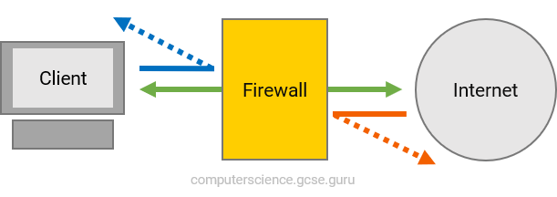
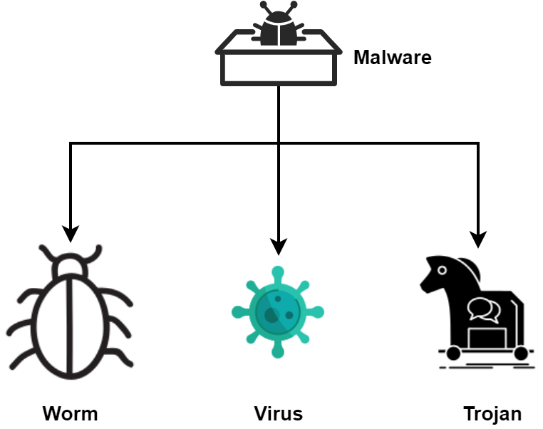

9626 Information Technology study
material.©
eSecurity
Personal data
Personal data is anything that that relates to you and your identity. This includes data such as:
- Name
- Address
- Telephone number
- Email address
- Bank details
Etc
Ways to keep personal data confidential:
-
Have strong passwords set on any account that holds personal data. Stronger passwords include
characters, numbers and symbols and are not a recognisable word.
- Encrypt (scramble text so that it cannot be read without a decryption key) any personal data stored on your computer
- Have a firewall present, scanning incoming and outgoing data from your computer system.
- Regularly scan your computer with preventative software, such as an anti-virus package, that is used to identify a virus on a computer and remove it.
- Do not open any email attachments from a sender you do not recognise.
- Check the URL attached to any link requesting data to see if it is genuine
- Remove data about your location that is normally attached to your photos and videos that you may post, such as geotags.
- Use a virtual private network (VPN), an encrypted connection that can be used to send data more securely across a network.
It changes or masks the users IP address
.
Firewall: a security measure that can be implemented to monitor traffic into and out of a computer and prevent external users
gaining unauthorised access to a computer system.

Biometric: unique physical characteristic of a person that can be used by a computer for identification purposes.
Fingerprint, facial recognition, iris scan etc.
Phishing
Phishing occurs when someone sends an email that appears genuine to a user. The email includes a link to a website
that also appears authentic. Users are urged to click the link and provide personal information on a form or by replying
to the email. They are deceived into disclosing their personal data to what they believe is a real source.
However, both the email and the linked website are from a fake unauthorised source.
How to recognise phishing
- Don’t open emails that are not from a sender you recognise or a trusted source.
- Reputable companies will never request your personal information via email.
- Be cautious of any email asking for such details and treat it with immediate suspicion.
- Legitimate companies will never ask you for your personal data using email.
- Be immediately suspicious of any email that requests your personal data.
- Be suspicious of any email that contains bad grammar or spelling mistakes
- A link in an email from a legitimate company will also normally contain the domain name of the company
Smishing
Smishing (or SMS phishing) is a variant of phishing that uses SMS text messages to lure the user into providing
their personal details. The user is sent an SMS text message that either contains a link to a website, in the same way that phishing does,
or it will ask the user to call a telephone number to resolve an urgent issue.
Minimize risk of Smishing
Similar guidance applies to smishing as it does for phishing.
- The user must question at all times any link that are sent from an unknown or suspicious user.
-
It's recommended that if a user thinks the message might be legitimate,
they should manually enter
the legitimate company's domain name into their web browser
instead of clicking the link
in the message.
Vishing
Vishing, or voice phishing, shares the same objective as phishing: acquiring a user's personal details.
In vishing, users receive a telephone call, which may be automated or involve a real person. An automated voice
might inform the user of a supposed issue, like suspicious activity in their bank account.
They could be instructed to call another number or press a digit to reach another automated system,
asking for their bank details to resolve the issue. Alternatively, a real person may attempt to convince
the user of an account problem, urging them to provide login details or a PIN under the guise of verifying their identity.
This unauthorized access can lead to criminal activities against the user.
To prevent vishing
- Legitimate companies will never call you to request login details or PIN information over the phone.
-
While they may ask for other personal information, if there's any doubt about the caller's legitimacy,
it's wise to hang up and contact the company directly using a known and verified phone number.
Pharming
Pharming involves an unauthorized user installing malicious code on a person's hard drive or computer.
This code redirects users to a fake website resembling a legitimate one when they enter the address. The intention is to deceive users
into providing personal details on the fake site, unknowingly submitting their information to the unauthorized user.
A common pharming technique is called
DNS cache poisoning. The hackers exploit vulnerabilities in the domain name server and divert to internet traffic to a fake website.
In simple words, the DNS a temporary record of the website URL and IP stored on your computer, these hackers change this information so that
the next time you load up the website, it redirects you to the fake one instead.
How to prevent pharming
-
Ensure a functional firewall is in place. A firewall monitors both incoming and outgoing traffic from your computer.
Any traffic that fails to meet a criteria is flagged and prevented from proceeding.
-
Install an antivirus program specifically designed to identify malicious pharming code. Regularly scan your computer
for any potential threats.
-
Be aware when using public Wi-Fi connections. A hacker could look to directly access your computer and install the malicious code
if you are connected to a public Wi-Fi connection. It is often advisable to use a VPN when using public Wi-Fi
Malware

Virus
A virus is the most commonly known type of malware. A virus is the only type of malware that infects new files in the computer system.
It attaches itself to a clean file, replicates itself, then attaches itself to another clean file. It is designed to spread,
much like a human virus. If an infected computer is part of a network, it can then begin to infect other computers on the network
Virus side effects
- slower system performance
- files multiplying or duplicating on their own
- files being deleted without your knowledge.
Minimizing risk of virus
A robust anti-virus software is needed to minimise the risk of a virus. You should install an anti-virus program
and regularly scan your computer.
Anti virus software
Anti-virus software performs scans on a computer system, identifying files suspected of containing viruses. Upon detection,
it isolates these files in quarantine and notifies the user. Users have the option to manually delete these quarantined files.
It is possible to remove this stage and set the software to automatically delete all quarantined files.
The anti-virus software can detect the presence of a virus in a file by comparing the code to a database of known virus codes.
If it finds a code that matches it will quarantine the file. This is known as
heuristic checking.
A notable vulnerability of anti-virus software lies in its dependency on its database. If a perpetrator successfully hacks a system
with a virus not documented in the database, the anti-virus software may fail to recognize and remove the threat.
A firewall can also be used to minimise the risk of a virus. A firewall actively monitors both incoming AND outgoing
traffic within a computer system.
Trojan
A Trojan is a type of malware that disguises itself as legitimate software, or is included in legitimate software that may have been infiltrated.
They are mostly downloaded from an infected email or website. It looks harmless, but it hides a malicious program.
Minimize risk of trojan
The main way to minimise the risk of a Trojan is to only open files and click to run software that you know is from a trusted source,
for example, trusted software companies and trusted websites.
Worm
A worm is a type of malware similar to a virus, but it differs in a key way. Unlike a virus, a worm can replicate itself
WITHOUT attaching to other programs. It exploits security weaknesses in a computer's operating system, aiming to fill up the free space
and slow down the computer. Users may notice their computer running slowly and a rapid decrease in hard drive space as signs of a worm infection.
Additionally, worms try to spread to other computers on a network, potentially affecting numerous machines. If they successfully
spread across a network, they can clog up bandwidth and slow down the entire network.
Minimize risk of worms
To minimize the risk of worms which often exploit software vulnerabilities on a computers
operating system or applications, you should regularly check for, and install, updates for your operating system and your applications.
Anti-virus software is equipped to detect worms, so conducting regular scans helps identify any worm infections on your computer.
Worms often spread through network connections, so a safety measure is to disconnect your computer from the network when network resources are unnecessary
Spyware
The term spyware, covers a broad range of malware refers to any technology used to gather data about a person without their knowledge.
A key logger records key presses from a keyboard and will allow the person who installed it to gather personal data about the person.
To minimize risk of spyware
When downloading, especially free software or from sharing sites, ensure it's from trustworthy sources.
Avoid clicking on links in pop-up ads.
Carefully read user agreements for any hidden clauses, particularly regarding spyware and data sharing.
Be cautious with cookies, as they can track your online activities. Anti-malware software helps scan for keylogging software
Adware
Adware is short for advertising-supported-software and used to display adverts that are targeted at the user.
Minimising the risk of adware
When downloading, carefully inspect the list of components and uncheck anything that resembles adware, like additional browser tools.
Once adware is downloaded, removing it can be challenging, requiring multiple scans with anti-malware software for detection and removal
Rootkit
A Rootkit is a computer program that enables a person to gain administrator access to a victim’s computer. It allows the
unauthorised user to do several criminal acts with the computer, such as hide illegal files on the computer, use the computer
as part of a larger cyber attack or to steal personal data and information
Minimising the risk of a rootkit
Rootkits are often installed through your computer password being cracked, or by another means such as embedded in a
software download or installed on a USB memory stick. It is advisable to have a strong password set for your computer to minimise the risk
of it being cracked. Download from trusted and reputable sources. A rootkit may be detected by anti-malware, but this is highly unlikely.
Often, one of the only ways to rid a computer of a rootkit is to completely uninstall the operating system.
Malicious bots
A bot is an automated application designed for repetitive tasks.
- SPAM bots that flood email inboxes with spam
- Chatter bots mimic human behavior on social networking and dating sites
-
Zombie bots/Sleeper bots. The latter lies dormant on computers until activated, forming
bot networks to launch large-scale attacks on organizations by connecting compromised computers.
Minimising the risk of bots
Bots are often embedded into links or software downloads and are often spread in the same way that phishing is carried out.
Therefore, the same measures that can be taken to minimise phishing can be applied to bots
Ransomware
Ransomware is malware that restricts a user’s access to their computer system and files. The ransomware
will normally demand that the user pays a ransom in order to regain access to their computer system.
Minimising the risk of ransomware
As ransomware is distributed in a similar way to Trojans, the same guidelines for minimising the risk of Trojans can also
be followed